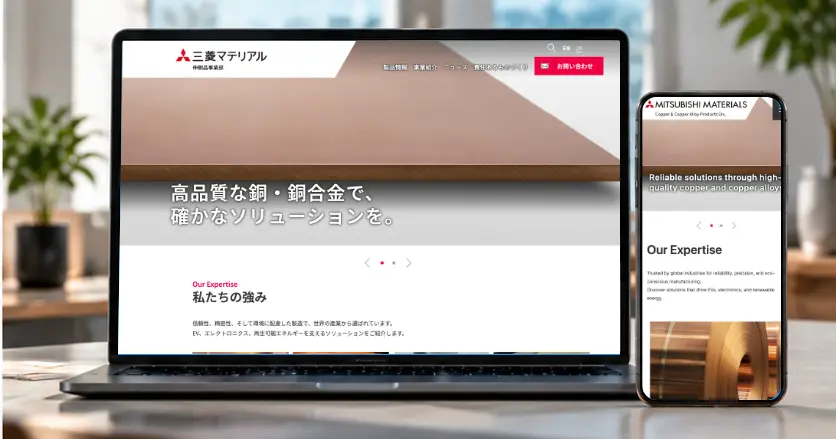
2026
三菱マテリアル
伸銅品事業 Webサイト リニューアル
既存デザインをもとにした実装、レスポンシブ対応、既存CSS・JavaScriptの解析・改修、製品検索UI、日英ページ制作などを担当。
VIEW PROJECT →Design / UI / Coding
Web制作経験20年以上。Web・UIデザインを軸に、HTML/CSS/JavaScriptによる実装、既存サイトの運用・改修まで一貫して対応。事業会社での長期的なサイト運用・改善経験を活かし、デザインと実装双方の視点からWebサイト・サービスの改善に携わってきました。
PROFILEを見る →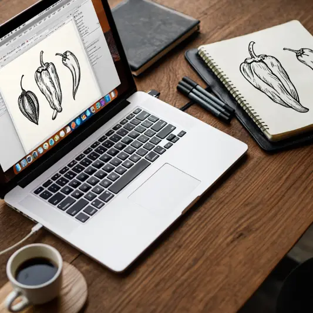

2026
既存デザインをもとにした実装、レスポンシブ対応、既存CSS・JavaScriptの解析・改修、製品検索UI、日英ページ制作などを担当。
VIEW PROJECT →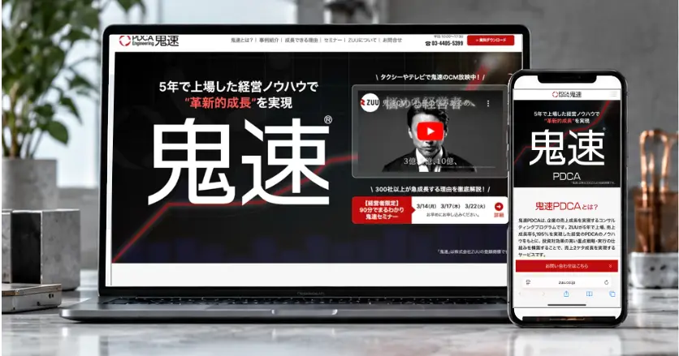
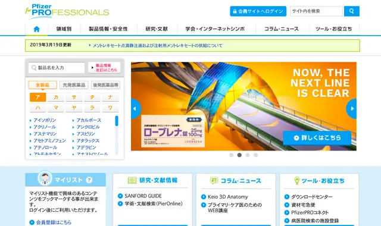
Web Designer
医薬品メーカーのWebサイト制作に参画。医療関係者向けサイトや疾患関連サイトなどのデザイン・コーディングを担当。
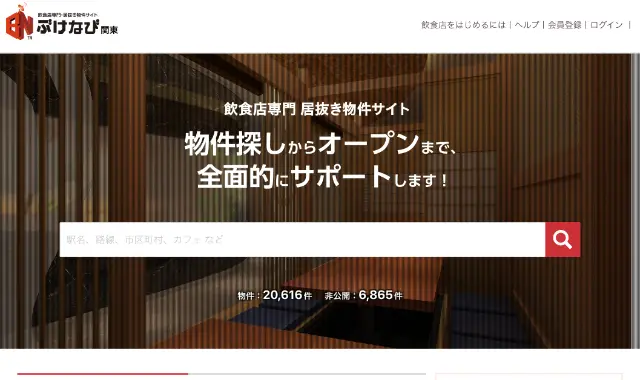
UI / Web Designer
居抜き店舗検索サービスのリニューアルなどを担当。UI/UXデザインからレスポンシブコーディングまで対応。
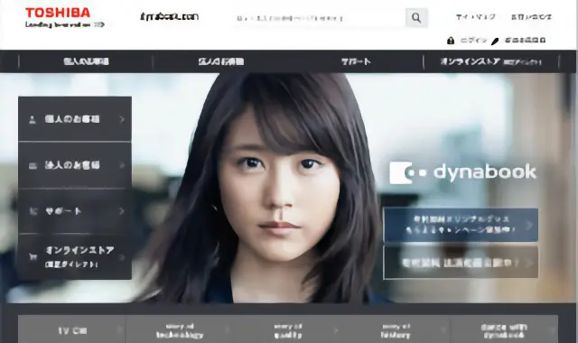
Web Designer
東芝dynabookや東芝ライフスタイルの製品サイト制作支援。画像加工、マークアップ、実装などを担当。
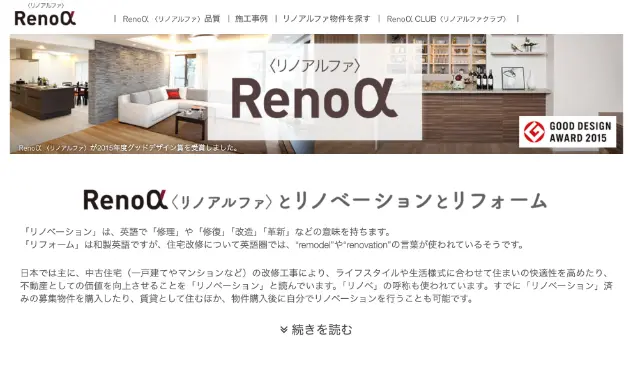
Web Designer
不動産サイト、中古車サイト、各種LPなどの制作に参画。UIデザイン、画像加工、HTMLマークアップを担当。
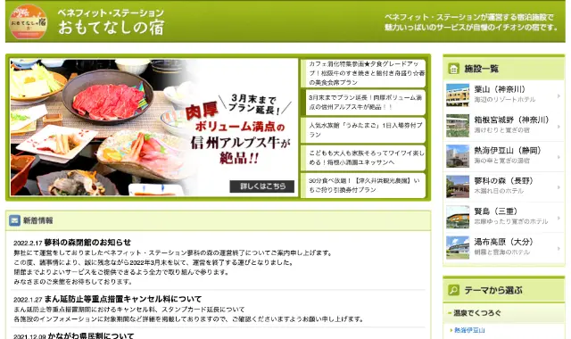
Web Designer
福利厚生サービス内の特集・サービスページを多数制作。制作、更新、既存ページの改修まで継続して担当。
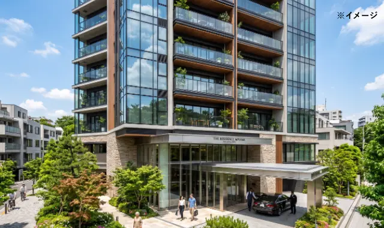
Web Designer / Coder
新築マンションサイトを中心としたWeb制作に参画。デザイン、画像制作、HTML/CSSコーディングなどを担当。
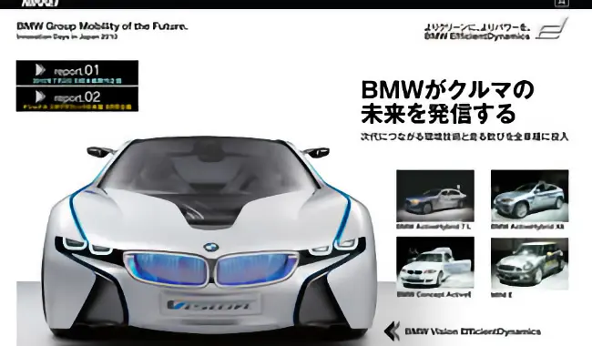
Web Designer / Coder
日経BP社・日経新聞社のWebコンテンツ制作を担当。タイアップページや特集サイトなど、デザインから実装まで幅広く対応。
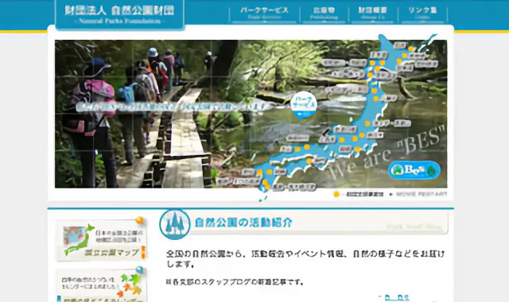
Web Designer / Coder
国立公園を紹介するWebサイトの制作支援に参画。Webページ制作、画像制作、コーディングなどを担当。
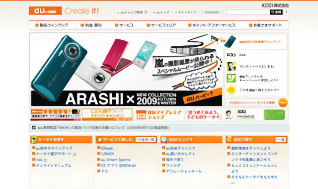
Web Director
auサイトの制作・運用にWebディレクターとして参画。関係者との調整や制作進行などを担当。
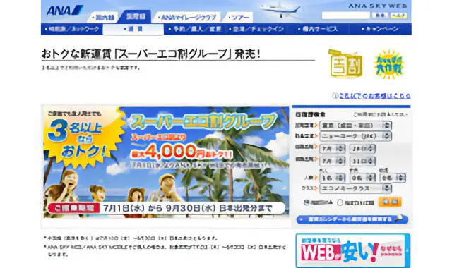
Web Designer / Coder
ANA関連のWebコンテンツ制作に参画。特集ページやLPなどのデザイン・コーディングを担当。
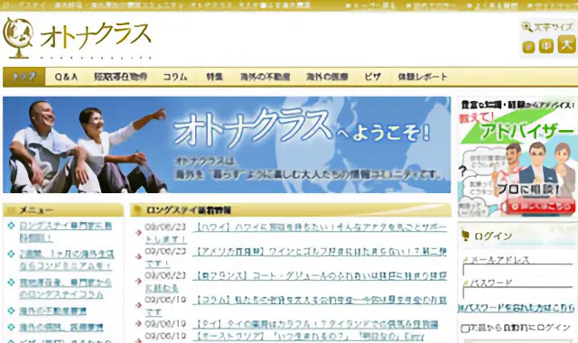
Web Designer
シニア向け海外移住SNS「オトナクラス」など、Webサービスの制作・運用を担当。
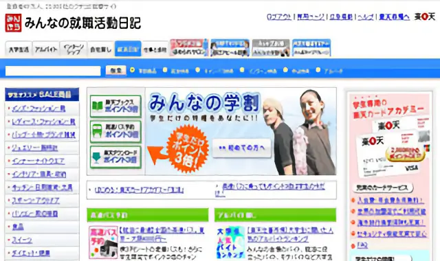
Web Designer
「楽天仕事市場」「みんなの就職活動日記」を中心に、キャンペーン、LP、イベント案内など各種Webコンテンツを制作。
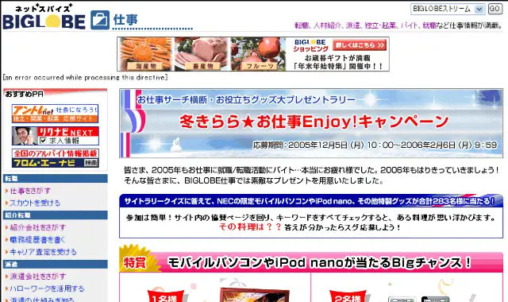
Web Director
Webコンテンツの企画・運用、企業調整、外部デザイナーへの制作指示、効果測定、メルマガなどを担当。
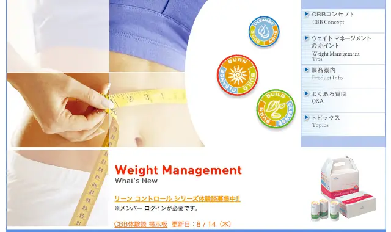
Web / Creative
日本法人Webサイトの立ち上げ、ECサイト運営、製品カタログや案内物、イベント用クリエイティブなどを担当。
三菱マテリアル
伸銅品事業 Webサイト リニューアル
ZUU
Webサービス・オウンドメディア
Mighty Mighty
医薬品メーカーサイト
teamLab
不動産・中古車・各種LP
ベネフィット・ワン
サービスサイト・特集ページ
日経BP
タイアップ・Webコンテンツ
楽天
キャンペーン・特集
その他
Web / Creative
AIを活用した高速化・効率化も取り入れ、デザインからコーディングまで一気通貫で対応。既存環境を理解した上での運用・改善を得意としています。
週3回〜の稼働やリモート対応、現場の状況に合わせて柔軟に対応可能です。ご提案できそうな案件がございましたら、ぜひ一度お話しさせていただけますと幸いです。
CONTACT
お仕事のご相談・ご連絡はエージェントの営業担当までお願いいたします。